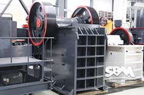
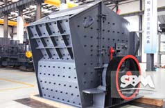
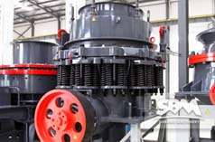

Sand Making Machine
Our company can supply two models sand making machine, VSI crusher and VSI5x crusher. The two series sand making amchine use sand technology in Germany advanced, is has a number of independent patent property rights of a new generation of our engineers a new product. It brings together three broken mode in one, has become the core equipment of sand making industry, can provide high quality sand aggregate a lot for highway, high-speed railway, high-rise buildings, municipal, hydropower dam construction, concrete mixing station.
Sand Making Machine Working Principle
Material from the feed hopper into the sand making machine, the distributor sends the material is divided into two parts. In part by the distributor intermediate into the high-speed rotating impeller, was rapidly accelerated in the impeller. And then to 60-70 M / s velocity from the impeller three uniformly distributed in the channel of the projectile out. First of all by the same distributor around since the receipt of a portion of the material impact of falling and breaking, together with the impact to the vortex branch cavity material lining layer, is material lining layer rebound, oblique impact to the vortex chamber top, it changes its direction of motion, deflection downward movement, emitted from the impeller material is formed continuous material curtain. Such a material dynamic crushing cavity under two times that many probability impact, friction and grinding effect in vortex. The material being broken by the lower discharge outlet. In the crushing process, material by mutual impact crushing, not in direct contact with the metal components, but with material lining layer of impact, friction and grinding, which reduces pollution, prolong mechanical wear time.
Advantages Of Using Sand Making Machine
Run smooth performance, process simplification, the fuselage of reasonable and compact structure, easy replacement parts etc.. This is a performance of all the sand making machine should be universal, but in this generation of sand making machine body, the performance has been enhanced.
The sand making machine makes the three stage crushing variable in the process of the work for two broken, more capacity.
The unique structure. Its unique because of its unique high chromium plate hammer, unique lining counterattack crushing hard rock, design of inertial impact balance device is unique, unique assembly and disassembly window.
Technical Data
VSI crusher
| Model | Feed at center&sides | Feed at center | Soft Material | Hard Material | REV (r/min) | Power (kw) | Motor Model | Machine Size (mm) |
|---|---|---|---|---|---|---|---|---|
| Capacity (t/h) | Max.Feeding (mm) | |||||||
| VSI7611 | 120-180 | 60-90 | 35 | 30 | 1700-1890 | 4-55×2 | Y250M-4/55 | 4100×2250×2258 |
| VSI8518 | 200-260 | 100-130 | 40 | 35 | 1520-1690 | 4-90×2 | Y280M-4/90 | 4140×2280×2425 |
| VSI9526 | 300-380 | 150-190 | 45 | 40 | 1360-1510 | 4-132×2 | Y315M-4/132 | 4560×2450×2780 |
| VSI1140 | 450-520 | 225-260 | 50 | 45 | 1180-1310 | 4-200×2 | Y315L2-4/200 | 5100×2690×3200 |
VSI5x Crusher
| Model | Feed at center&sides | Feed at center | Soft Material | Hard Material | REV (r/min) | Power (kw) | Motor Model | Machine Size (mm) |
|---|---|---|---|---|---|---|---|---|
| Capacity (t/h) | Max.Feeding (mm) | |||||||
| VSI5X7615DR | 150-280 | 70-140 | 35 | 30 | 1700-1900 | 4-75×2 | Y280S-4/75 | 4100×2330×2300 |
| VSI5X8522DR | 240-380 | 120-190 | 40 | 35 | 1500-1700 | 4-110×2 | Y315S-4/110 | 4140×2500×2700 |
| VSI5X9532DR | 350-540 | 180-280 | 45 | 40 | 1300-1510 | 4-160×2 | Y315L1-4/160 | 4560×2600×2900 |
| VSI5X1145DR | 500-640 | 250-360 | 50 | 45 | 1100-1310 | 4-220×2 | Y355M1-4/220 | 5000×2790×3320 |
Related Products
|  PE Jaw Crusher |
 PFW Impact Crusher |
 CS Cone Crusher |